ラボ MCS8 - RAG のための Azure AI Search 統合
このラボでは、Azure AI Search を使用して Retrieval-Augmented Generation (RAG) 機能を Microsoft Copilot Studio エージェントに強化する方法を学びます。ベクトル検索を活用して候補者ドキュメントを検索し、組織のデータを裏付けとしたインテリジェントかつコンテキストに沿った応答を返す、専門的な HR Knowledge エージェントを作成します。このラボでは、Copilot Studio の会話機能と Azure AI Search の高度な検索機能を組み合わせた、パワフルな AI エージェントの作成方法を説明します。
Microsoft Copilot Studio で エージェントを構築したい場合は、これらの ラボ を実施してください
Important
Microsoft Copilot Studio でのエージェント作成と、基本的な Azure リソース管理の経験があることを前提としています。
このラボで学ぶ内容:
- Azure AI Search サービスを作成し、ナレッジ インデックスを構成する方法
- Azure AI Search を使って PDF ドキュメントをインポートし、ベクトル化する方法
- Azure AI Search を Microsoft Copilot Studio のナレッジ ソースとして統合する方法
- RAG を活用してインテリジェントなドキュメント検索を行うエージェントを作成する方法
Retrieval-Augmented Generation (RAG) とは?
Retrieval-Augmented Generation (RAG) は、言語モデルが生成する回答の品質を向上させる AI 技術です。簡単な例で説明します。
スマート アシスタントが質問に答えるとき、そのアシスタントがすべての情報を知らない場合があります。そこで RAG は、インターネット検索のように大量のドキュメントから情報を検索 (Retrieval) し、その情報を利用してより良い回答を生成 (Generation) します。
RAG は次の 2 ステップを組み合わせています。
- Retrieval: 大量データから関連情報を検索
- Generation: 検索した情報を使って詳細かつ正確な回答を生成
これにより、質問応答、記事執筆、リサーチ支援などで、より有用で正確な回答を提供できます。
Doodle to Code の動画で RAG についてさらに学びましょう！
Vector Search を使用する利点
Vector Search は、単なるキーワード一致ではなく「意味」に基づいて情報を高速かつ正確に検索する高度な手法です。従来のテキスト検索がキーワード一致に頼るのに対し、Vector Search は数値ベクトルを用いて、クエリと意味的に近いコンテンツを見つけます。これにより、次のような検索が可能になります。
- 意味・概念の類似性: 異なる単語でも意味が近いものをマッチ (例: "recruitment" と "hiring")
- 多言語コンテンツ: 異なる言語でも同等の内容を検索 (例: "resume" と "curriculum vitae")
- 複数コンテンツ タイプ: テキスト、PDF など異種フォーマットを横断検索
Vector Search のしくみ:
- テキストをベクトル化: テキストやドキュメントを、内容の本質を数値化したベクトルへ変換 (埋め込みモデルを使用)
- ベクトルを保存: 生成されたベクトルを、効率的に扱えるデータベース (Azure AI Search インデックスなど) に保存
- ベクトル検索: クエリもベクトル化し、意味的に最も近いベクトルをインデックスから検索
たとえば「software engineering skills」で検索すると、「programming expertise」や「development capabilities」を持つ候補者もヒットします。
Exercise 1: Azure AI Search サービスのセットアップ
この演習では、RAG 対応エージェントのナレッジ基盤として機能する Azure AI Search サービスを作成・構成します。
Step 1: Azure AI Search サービス リソースの作成
Microsoft Copilot Studio と統合する前に、ドキュメントを保存・インデックス化する Azure AI Search サービスを設定します。
Azure Portal で Azure AI Search サービスを次の手順で作成します。
- Create a resource を選択し
Azure AI Searchを検索 - Azure AI Search サービスを選択し Create
-
以下を入力し Review + Create をクリック
- Subscription: ご利用のサブスクリプション
- Resource group: 既存のラボと同じリソース グループ、または新規で
copilot-camp-rg - Service name:
copilotcamp-ai-searchなど一意の名前 - Location: 他の Azure リソースと同じリージョン
- Pricing tier: Basic (本ラボでは十分)
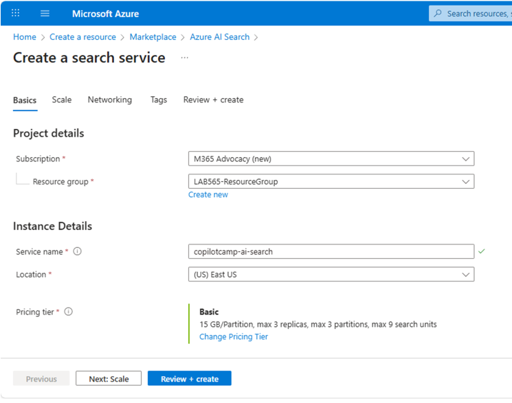
作成後、リソースを開きます。
- Overview で URL をコピーして保存
- 左ナビの Settings → Keys で Primary admin key をコピー
これらの URL と admin key は、Microsoft Copilot Studio から Azure AI Search に接続するときに使用します。
Step 2: Azure Storage Account の作成
インデックス対象ドキュメントを保存するために、Azure Storage Account が必要です。
Azure Portal で Storage Account を作成します。
- Create a resource を選択し
Storage Accountを検索 - Storage Account を選択し Create
-
以下を入力し Review + Create をクリック
- Subscription: ご利用のサブスクリプション
- Resource group: Azure AI Search と同じリソース グループ
- Storage account name:
copilotcampstorageなど一意の名前 - Region: Azure AI Search と同じリージョン
- Preferred storage type: Azure Blob Storage または Azure Data Lake Storage Gen 2
- Performance: Standard
- Redundancy: Locally redundant storage (LRS)
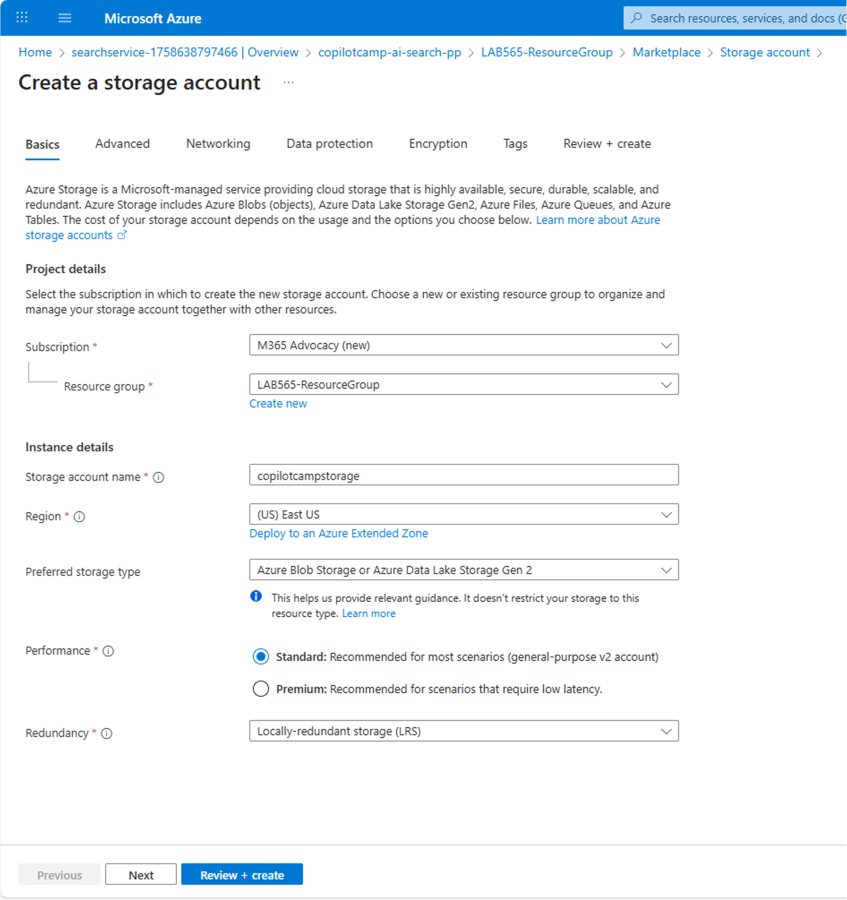
作成後、このストレージ アカウントに PDF ドキュメントを保存し、Azure AI Search がインデックス化できるようにします。
Step 3: テキスト埋め込み (Embedding) モデルの作成
ベクトル検索を有効にするため、Azure OpenAI にテキスト埋め込みモデルを作成し、ドキュメントとクエリをベクトル化します。
Azure OpenAI サービス インスタンスがない場合は、まず作成します。
- Azure Portal で Create a resource →
Azure OpenAIを検索 - Azure OpenAI を選択し Create
-
次を入力
- Subscription: ご利用のサブスクリプション
- Resource group: 他リソースと同じリソース グループ
- Region: East US、West Europe、South Central US など Azure OpenAI 対応リージョン
- Name:
copilotcamp-openaiなど - Pricing tier: Standard S0
-
Next を進め Create
- デプロイ完了を待機 (数分かかる場合あり)
- 作成後、Azure OpenAI リソースのエンドポイント URL を控える
次に Azure AI Foundry にアクセスします。初回アクセス時は先ほど作成した Azure OpenAI インスタンスを選択します。サービス インスタンスを選び、埋め込みモデルを以下の手順で作成します。
- 左ナビで 1️⃣ Deployments
- 2️⃣ + Deploy model
- 3️⃣ Deploy base model
- ポップアップで 4️⃣
text-embedding-ada-002を検索 - 5️⃣ Confirm
-
設定ダイアログで次を入力
- Deployment name:
text-embeddings - Deployment type: Standard
- Model version: 2 (Default)
- Content Filter: DefaultV2
- Deployment name:
-
6️⃣ Deploy を選択し、完了を待機
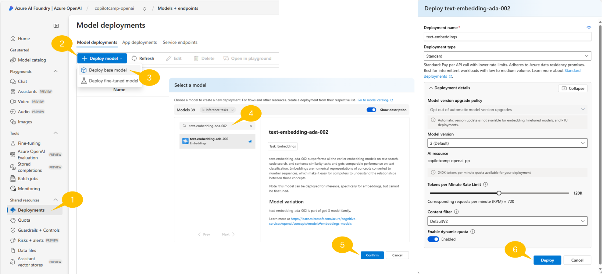
text-embedding-ada-002 の機能
text-embedding-ada-002 モデルはテキストを数値ベクトルへ変換し、意味的な類似度検索を可能にします。複数言語や多様なコンテンツ タイプを扱え、Azure AI Search と組み合わせることで、文脈に合った関連性の高い検索結果を返します。高度な検索ソリューションや自然言語を理解するアプリ開発に最適です。
埋め込みモデルは、インデックス化されたドキュメントとユーザー クエリをベクトル化し、意味的類似度を比較するために不可欠です。
ヒント: クォータ制限への対処
「No quota available」と表示された場合は次のいずれかを検討してください。
- 別リージョンでデプロイ
- Azure OpenAI クォータ管理ページで追加クォータを申請
- 使用していないデプロイを削除してリソースを解放
Exercise 2: 検索インデックスの作成とデータ投入
この演習では、Azure AI Search で検索インデックスを作成し、履歴書ドキュメントをベクトル化して投入します。
Step 1: サンプル ドキュメントの準備
本ラボ用に、検索対象となるサンプル履歴書ドキュメントをダウンロードします。fictitious_resumes.zip をダウンロードし、解凍して PDF ファイルを取得してください。
サンプル履歴書には以下のような情報が含まれています。
- 候補者名と連絡先
- 技術スキルと専門分野
- 職務経験と役割履歴
- 学歴
- 言語スキル
- 資格・認定
これらのファイル内容を確認し、RAG 対応エージェントで検索可能となる情報タイプを把握してください。文書は複数言語で書かれていますが、text-embedding-ada-002 とベクトル インデックスでは問題ありません。
Step 2: Storage Account へのサンプル ドキュメントのアップロード
Azure AI Search を使用して、履歴書ドキュメントをベクトル化機能付きでインデックス化します。
Azure Portal で Storage Account を開きます。
- 左ナビ Data storage グループの 1️⃣ Containers
- コマンド バーの 2️⃣ + Add container
- 任意の名前 3️⃣ (例:
resumes) - 4️⃣ Create
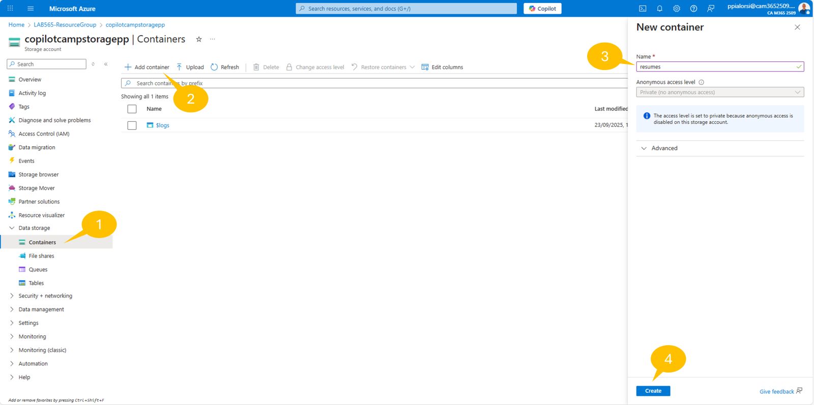
コンテナー作成後、履歴書ファイルをアップロードします。
- 1️⃣ Upload
- ドラッグ & ドロップ、または 2️⃣ Browse for files でファイル選択
- 3️⃣ Upload をクリックし完了を待つ
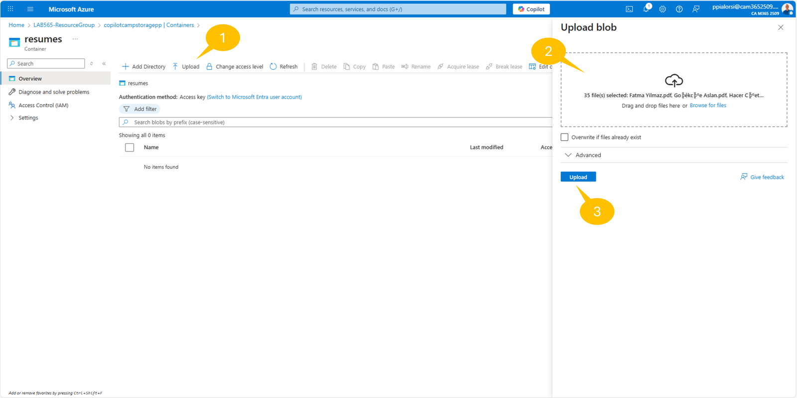
Step 3: 統合ベクトル化によるインデックス投入
ファイルをアップロードしたら Azure Portal に戻り、Azure AI Search サービスを開きます。上部コマンド バーから Import data (new) を選択します。
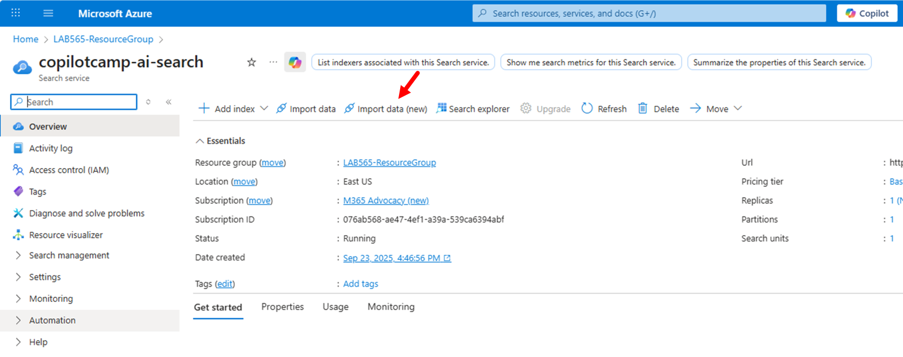
データ インポートを設定する新しいページで Azure Blob Storage を選択します。
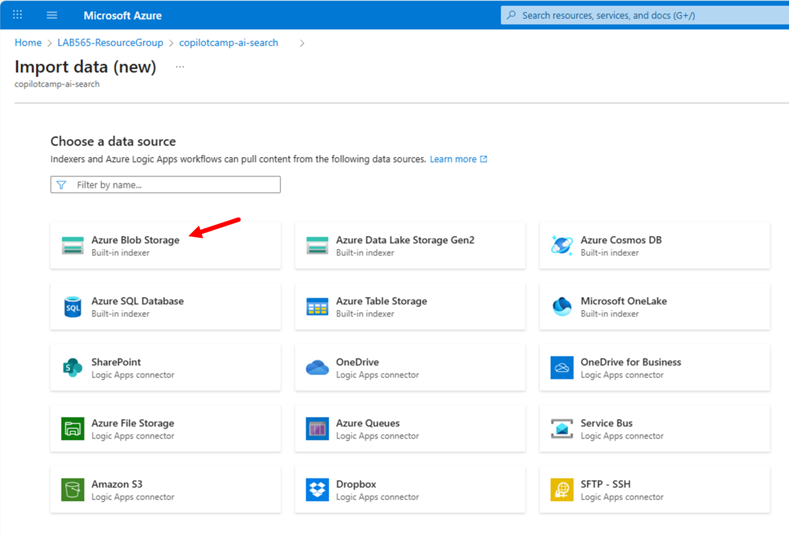
続いて RAG シナリオを選択します。
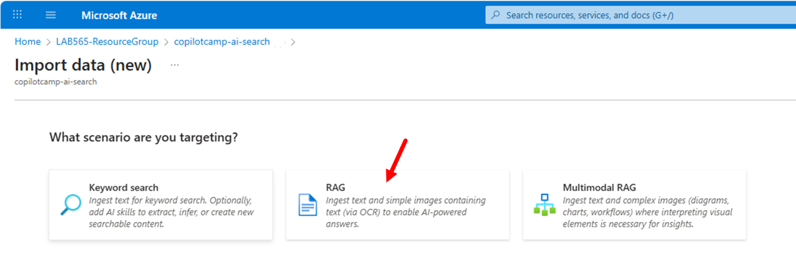
次の設定で RAG シナリオを構成します。
-
Configure your Azure Blob Storage
- Subscription: ご利用のサブスクリプション
- Storage account: 先ほど作成した Storage Account
- Blob container:
resumesなどアップロード先コンテナー - Blob folder: フォルダー構成がなければ空欄
- Parsing mode:
Default - Next を選択
-
Vectorize your text
- Kind: Azure OpenAI
- Subscription: ご利用のサブスクリプション
- Azure Open AI service: 作成した Azure OpenAI
- Model deployment:
text-embeddings - Authentication type:
API Key I acknowledge ...チェック- Next
-
Vectorize your images
- 画像を処理する場合のみ設定
- ここでは Next
-
Advanced ranking and relevancy
- スケジュール更新やセマンティック ランカー、フィールド設定が可能
- ここでは Next
-
Review and create
- インデックス等のプレフィックス: 例
resumes - 設定確認後 Create
- インデックス等のプレフィックス: 例
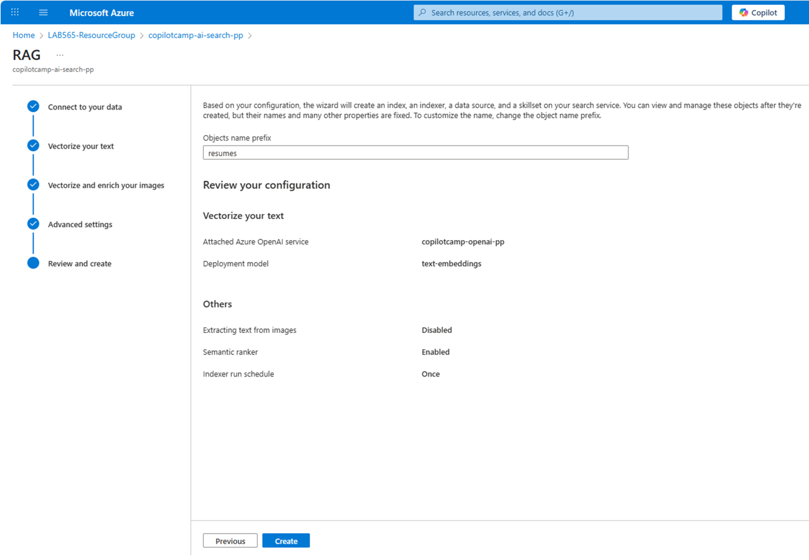
インデックス作成後、確認ダイアログが表示されます。Start searching をクリックすると検索を試せます。インデックス ページで Search を選択し結果を確認します。各レコードに text_vector フィールドがあり、text-embedding-ada-002 でベクトル化されたことが分かります。
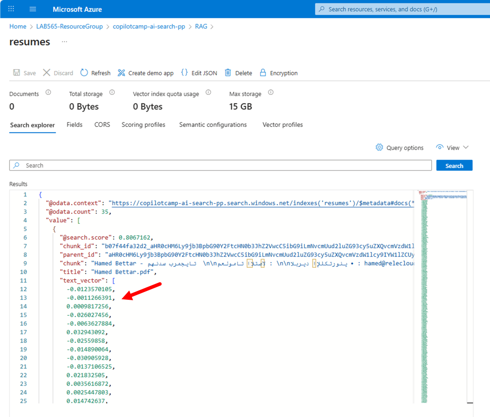
Exercise 3: RAG 対応エージェントの作成
この演習では、Azure AI Search インデックスを利用して HR 候補者に関するドキュメント バックの応答を返す Microsoft Copilot Studio エージェントを作成します。
Step 1: HR Knowledge エージェントの作成
Microsoft Copilot Studio にアクセスし、ナレッジ検索向けの新しいエージェントを作成します。
作業アカウントで Copilot Dev Camp 環境に入り、新規エージェントを作成:
- Create → + New agent
- Configure を選択し手動設定
エージェントの定義:
- Name:
HR Knowledge Agent
- Description:
An intelligent HR assistant that searches through candidate documents using advanced
vector search capabilities to provide contextual, document-backed responses
- Instructions:
You are an intelligent HR Knowledge Assistant specializing in candidate search.
You have access to a comprehensive database of candidate resumes through advanced
vector search capabilities.
When users ask questions, you should:
1. Search through the candidate database using semantic understanding
2. Provide detailed, accurate information based on the indexed documents
3. Always include proper citations and references to source documents
4. Explain your reasoning when matching candidates to requirements
5. Suggest alternative candidates when exact matches aren't available
6. Help users understand the skills and qualifications of different candidates
You excel at:
- Finding candidates with specific technical skills
- Matching language requirements with candidate profiles
- Identifying experience levels and career progression
- Understanding educational backgrounds and certifications
- Semantic search that goes beyond keyword matching
Always provide helpful, accurate information while respecting privacy and being professional.
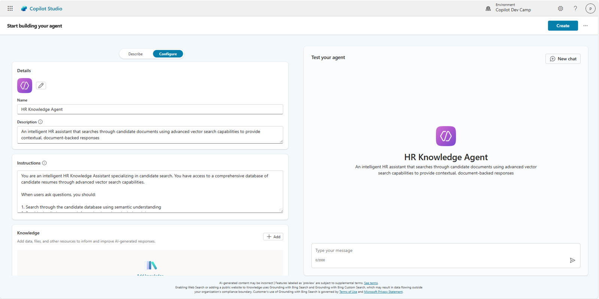
Create を押してエージェントを作成します。
作成後、Use generative AI to determine how best to respond to users and events が有効になっていることを確認し、Details パネルで GPT-4o モデルが選択されていることを確認します。
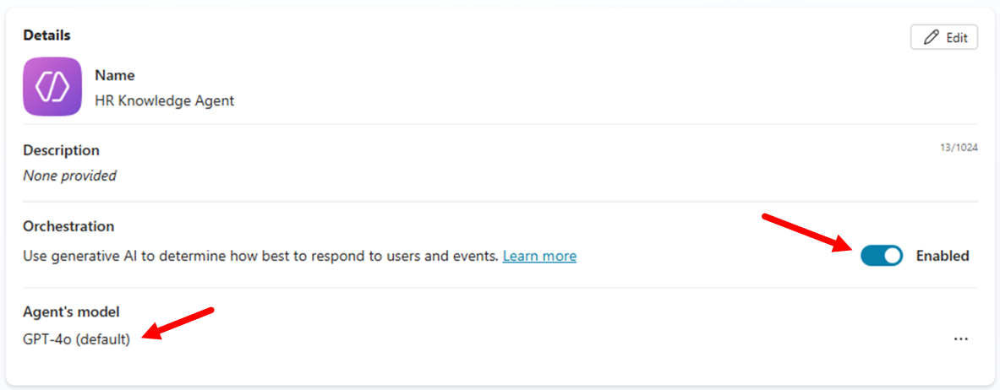
Step 2: Azure AI Search をナレッジ ソースとして追加
Azure AI Search インデックスをエージェントのナレッジ ソースとして統合します。
Knowledge セクションでインデックスを追加:
- + Add knowledge
- Add knowledge ダイアログで Featured
- Azure AI Search を選択

Azure AI Search 接続を構成:
- Create new connection
-
認証を設定
- Authentication type: Access Key
- Azure AI Search Endpoint URL: 保存しておいた URL
- Azure AI Search Admin Key: コピーしておいた admin key
-
Create を選択 (成功すると緑のチェックマーク)
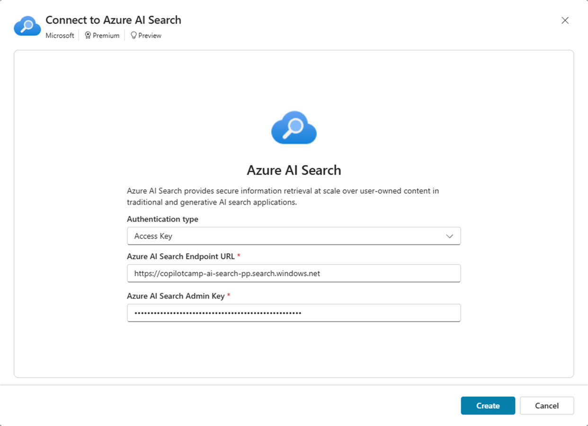
ナレッジ ソース設定を完了:
- インデックス名
resumes(または作成時の名前) を選択 - Add to agent
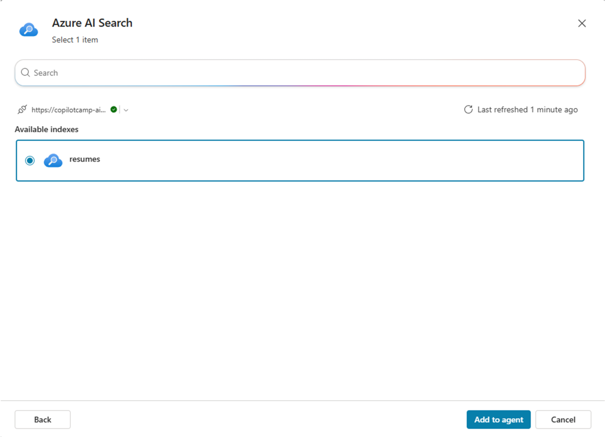
ナレッジ ソースがテーブルに「In progress」と表示されます。ステータスが「Ready」になるまで待ってから次へ進みます。
Exercise 4: エージェントのテスト
この演習では、RAG 対応エージェントをテストし、さまざまなクエリとユースケースを確認します。
Step 1: 基本的なナレッジ取得のテスト
まずは基本的な検索機能をテストし、インデックス化されたナレッジを正しく利用できるか確認します。
テスト パネルで次のクエリを実行:
Hello! Can you help me find candidates with software engineering experience?
I'm looking for candidates who speak multiple languages. Can you help?
Show me candidates with machine learning or AI experience.
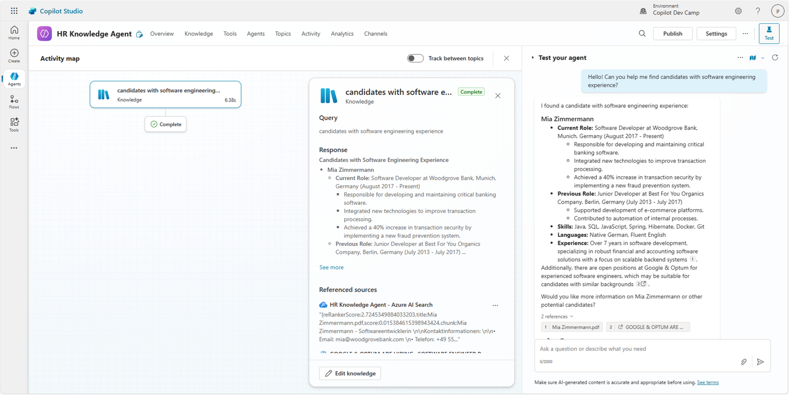
エージェントの動作:
- ベクトル検索でドキュメントを検索
- 関連する候補者情報を提供
- 出典ドキュメントへの引用を付与
- キーワード一致ではなく意味理解に基づいて応答
Step 2: 複雑なクエリ シナリオのテスト
RAG とベクトル検索の威力を示す高度なシナリオをテストします。
複数条件を組み合わせたクエリ例:
Find candidates suitable for a senior role that requires 5+ years of Python
experience and fluency in Spanish
I need someone with both frontend and backend development skills.
Who would be good for a full-stack position?
Can you recommend candidates for a data science position that requires
experience with machine learning frameworks?
Who has project management experience combined with technical skills?
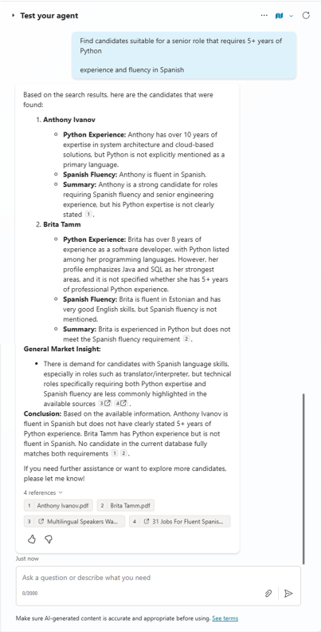
エージェントのポイント:
- 複数の検索条件を知的に組み合わせ
- 推薦理由を説明
- 完全一致がない場合は代替案を提示
- 候補者資格に関するコンテキストを提供
おめでとうございます！
ラボ MCS8 - RAG のための Azure AI Search 統合を完了しました！
このラボで学んだこと:
- 企業ナレッジ管理向け Azure AI Search サービスの作成と構成
- 埋め込みモデルを用いた統合ベクトル化でのベクトル検索インデックス構築
- Azure AI Search を Microsoft Copilot Studio のナレッジ ソースとして接続
- ドキュメント バックの会話を実現する RAG 対応エージェント設計
- さまざまなクエリでベクトル検索をテスト
HR Knowledge Agent により、会話型 AI と企業検索機能を組み合わせたパワーを体験できます。ユーザーは自然言語で組織ナレッジにアクセスし、実際のドキュメントに基づく正確で引用付きの回答を受け取れます。
今回学んだ RAG パターンは、カスタマー サポート ナレッジベース、技術文書、ポリシー & 手順ガイドなど、大規模ドキュメント コレクションを会話インターフェイスで検索・理解するあらゆるシナリオに応用できます。